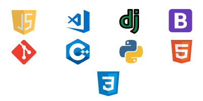

|
I'm Fernando Erazo, a Software Developer / Data Analyst who finds joy in crafting creative solutions that
harmonize
technology with real-world needs. When I'm not immersed in the world of code, you'll likely find me hitting
the
gym. I also cherish quality time with family, because, for me, the best
solutions come from a balanced life. Let's work together to turn ideas into impactful projects!

Tech Stack
Learning Goals
While I'm still in the early stages of my development journey, I'm passionate about learning and expanding my skill set. Currently, my focus lies in several key areas. Firstly, I'm dedicated to exploring new programming languages and frameworks, seeking to broaden my horizons in the rapidly evolving tech landscape. Additionally, I'm deeply committed to deepening my understanding of web development, striving for proficiency in creating seamless and user-friendly digital experiences.